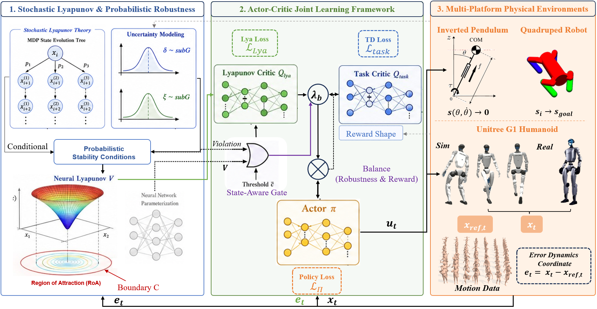
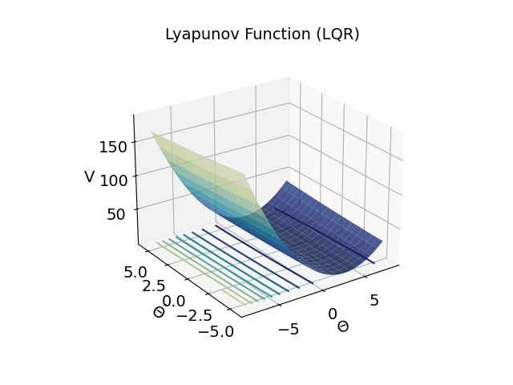
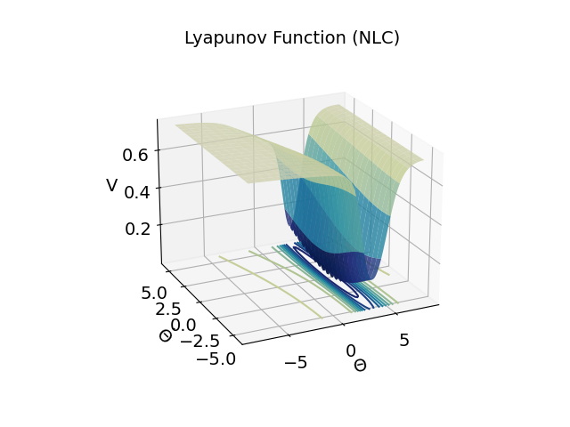
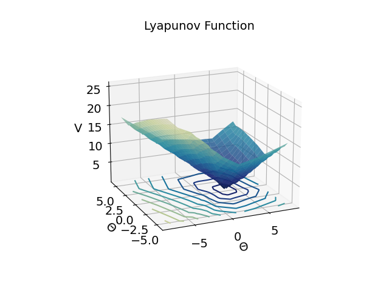
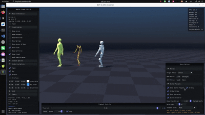

Certifiably Robust Reinforcement Learning via
Probabilistic Neural Lyapunov Functions
IEEE Transactions on Industrial Informatics (under review)

Abstract
Certifiable robustness is a critical prerequisite for robotic autonomy in complex real-world environments, where systems inevitably suffer from diverse inherent uncertainties including unmodeled dynamics and sensor noise. To address the lack of formal stability guarantees in existing learning-based locomotion controllers, we propose a unified framework integrating neural Lyapunov functions with reinforcement learning.
Different from prior deterministic Lyapunov methods and Gaussian-only stochastic stability analysis, we model both dynamic mismatch and state estimation noise as sub-Gaussian random disturbances and derive rigorous probabilistic Lyapunov conditions with an explicit provable lower bound on system convergence probability. These stability constraints are embedded as regularizers into an end-to-end Actor–Critic pipeline to jointly optimize task tracking performance and certifiable robustness without requiring accurate analytical system models.
Our framework yields an expanded certified region of attraction and quantitative robustness metrics. Extensive validations are carried out across systems of rising complexity: inverted pendulum simulation, quadruped robot simulation, and full-sized Unitree bipedal humanoid with both simulation and physical hardware tests. Comparative results against classical control, deterministic neural Lyapunov, and state-of-the-art imitation RL baselines demonstrate superior disturbance resilience and stable gait recovery under locomotion tasks.
Method
The proposed pipeline jointly trains a task-oriented policy and a neural Lyapunov certificate (Twin Control Lyapunov Function, TCLF) inside an Actor–Critic RL loop. A state-aware gating mechanism balances task rewards and Lyapunov robustness penalties, enlarging the certified region of attraction while preserving locomotion tracking performance.
- Probabilistic stability conditions under sub-Gaussian uncertainty modeling
- Joint optimization of policy, value critic, and Lyapunov / Lyapunov-Q networks
- Quantitative robustness estimation for unseen disturbance intensities without retraining
- Validated from low-dimensional pendulum to high-dimensional bipedal locomotion (sim + hardware)
Inverted Pendulum
Quick preview of stabilization rollouts under different controllers (simulation).
3D Lyapunov Landscape

Example 1
Example 2
Example 3
Example 4
Example 5
3D Lyapunov Landscape

Example 1
Example 2
Example 3
Example 4
Example 5
3D Lyapunov Landscape

Example 1
Example 2
Example 3
Example 4
Example 5
Quadruped (Doggo)
Simulation snapshots of robust locomotion on the Doggo platform.
Snapshot 1
Snapshot 2
Snapshot 3
Snapshot 4
Humanoid Preview
Short GIF previews on Unitree G1 (simulation and hardware). Replace placeholders by uploading files to the paths shown below.
Simulation
Nominal Walk

Push Example 1

Push Example 2

Gait Recovery

Hardware
Nominal Walk

Push Example 1

Push Example 2

Gait Recovery

Humanoid Demo Video
Full-length humanoid experiment reel (YouTube).
youtubeVideoId at the bottom of this page to embed it.
BibTeX
@article{robust_nlfrl2026,
title = {Certifiably Robust Reinforcement Learning via Probabilistic Neural Lyapunov Functions},
journal = {IEEE Transactions on Industrial Informatics},
year = {2026},
note = {under review}
}